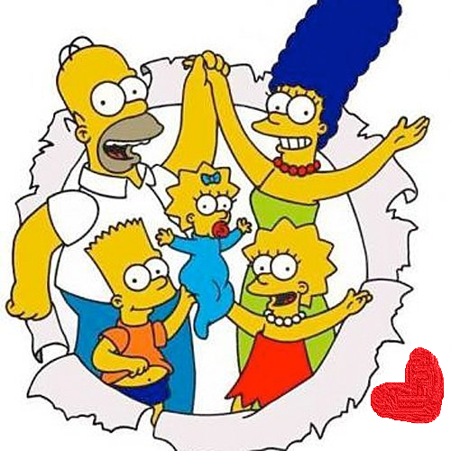

Hyperblog
Tu blog de confienza
Aquí incia la historia de una gran proyecto
y este es el párrafo de incio donde vamos a explicar las cosas increibles que se pueden hacer con ramas

los blogs son la mejor forma de compartit información y tus ideas. Mucho mas que ir a conferencias o salir en el youtube. Excepto si eres rockstar. pero especiamente no eres... por ahora.